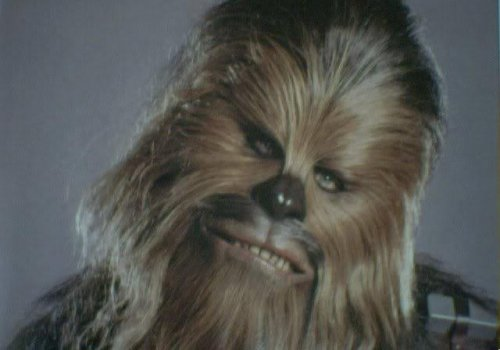
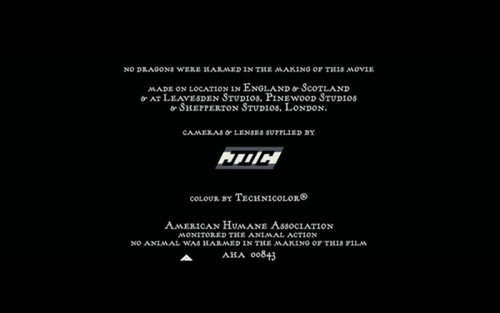
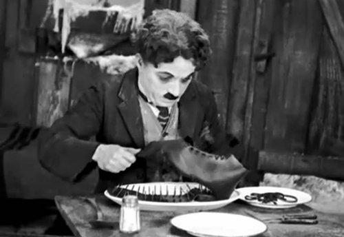
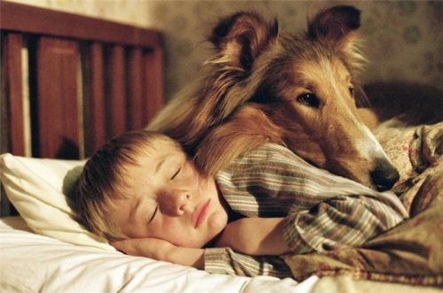
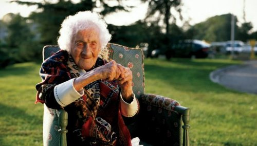

Найцікавіші маловідомі факти до 120-річчя кінематографа
28 грудня 1895 року у Парижі, на бульварі Капуцинок, в Гран-кафе відбувся перший комерційний кіносеанс. Показали декілька фільмів, демонстрація тривала приблизно 50 секунд. Саме цей день вважається днем народження кіно. Протягом 2015-го року світова кіно спільнота святкувала 120-річний ювілей кіно. Наприклад, на Каннському кінофестивалі показали фільм «Люм’єр!», де було зібрано фільми засновників кінематографа. Всупереч розхожій думці фільм «Прибуття поїзда» не з'являвся на цьому першому кіносеансі. Саме у день народження кіно ZAXID.NET зібрав маловідомі факти про наймолодший та найдинамічніший вид мистецтва. Факти смішні, абсурдні та фантастичні, як і саме кіно. Наскільки вони є реальними, а наскільки вони реальність лише імітують, сказати важко. Зрештою, як завжди, коли йдеться про кіно. Знак Голлівуду був створений у 1923 році зовсім не для Фабрики мрій. Великі літери були рекламою нових житлових кварталів Лос-Анджелеса. Передбачалося, що знак простоїть десь півтора року, проте завдяки бурхливому розвитку кіноіндустрії його вирішили залишити. Британська актриса Пег Ентуісл наклала на себе руки, зістрибнувши з літери «H»
.jpg)
80% американських фільмів ери німого кіно втрачено. Більшу частину знищили просто тому, що на складах потрібно було звільнити місце для нових плівок. Коли режисер голлівудського фільму з якихось причин не хоче бачити своє ім'я в титрах, у якості режисера вказують Алана Сміта (Alan Smithee). Починаючи з 1968 року, з цим псевдонімом на екранах з'явилися вже більше 20 фільмів. Часто Алан Сміт вказується режисером розширених телеверсій відомих фільмів. Фільм «Трон» 1982 був одним з перших фільмів, у яких широко застосовувалася комп'ютерна графіка. Проте картина була виключена зі списку номінантів на «Оскар» за візуальні ефекти. Авторів звинуватили у шахрайстві, адже вони використали комп'ютери. Образ Чубаки з фільму «Зоряні війни» Джордж Лукас запозичив у власного пса. Під час зйомок сцени 6-го епізоду, які знімалися в лісах Каліфорнії, актора Пітера Мейг'ю супроводжували асистенти у яскравих костюмах. Режисер боявся, що місцеві мисливці могли прийняти Чубаку за звіря і підстрелити.
У процесі створення фільму спеціальна людина перед зйомкою кожного дубля клацає хлопавкою. Історично її головним призначенням була синхронізація звуку із зображенням при наступному монтажі. Сучасні технології дозволяють робити синхронізацію іншими методами, хлопавки все одно використовують для систематизації відзнятого матеріалу, адже на них пишуть номера або назви кожної сцени і дубля, а також іншу службову інформацію. Для озвучення динозаврів у фільмі «Парк Юрського періоду» Гері Райдстром записав безліч звуків реальних тварин. За його зізнанням, звук спілкування велоцирапторів базується на шлюбних криках черепах. Лідером за кількістю вироблених фільмів на рік є Індія. На екрани протягом року виходить близько 700 фільмів, тобто 2 фільми на день. На другому місці - так званий Ноллівуд, кінематограф Нігерії, Голлівуд посідає лише третє місце. Зворотний відлік, який незмінно супроводжує запуск космічних ракет, був придуманий кінематографістами. Вперше його показали у німецькому фільмі «Жінка на місяці» (1929) для нагнітання напруги. У фінальних титрах фільму «Гаррі Поттер і кубок вогню» є ремарка, яку може помітити лише найуважніший глядач: «жоден дракон під час зйомок фільму не постраждав».
Коли з'явилися перші звукові фільми, технології дублювання ще не було. Тому при зйомках фільмів, призначених для міжнародного прокату, голлівудським акторам доводилося грати одні й ті ж сцени кілька разів різними мовами. Існує спеціальне слово «walla», яке голлівудські актори масовки повторюють, щоб створити ефект гулу натовпу. У англійському кіно прийнято повторювати інше слово - «rhubarb», в японському - «gaya». Машина часу з фільму «Назад у майбутнє» в оригінальній задумці була холодильником. Ідею в сценарії замінили заради безпеки дітей. У США телефонні компанії спеціально виділили телефонні номери в діапазоні від 555-0100 до 555-0199 для використання їх виключно у фільмах, серіалах і комп'ютерних іграх. Це було зроблено, щоб убезпечити людей від дзвінків фанатів на реально існуючі номери. Стівен Спілберг три рази намагався вступити до Школи кінематографії університету Південної Каліфорнії і три рази отримував відмову. Згодом ця школа захотіла присвоїти йому почесний ступінь. Він погодився з умовою, що на дипломі буде стояти підпис тієї ж людини, яка підписувала відмови. Голлівудські кінокомпанії часто використовують декорації декілька разів. Так, декорації містечка Гіллвеллі, де відбуваються всі події картини «Назад у майбутнє» використовувалися у зйомках 104 різних картин, а декорації зі зйомок фільму «Інопланетянин» Стівена Спілберга використовували 37 разів. Рекордсменом є декорації зі стрічки «Золота лихоманка». Вони були задіяні на зйомках 200 фільмів.
У фільмі «Молодий майстер» з Джекі Чаном у головній ролі, є епізод, в якому герой Джекі б'ється з допомогою віяла. Його змогли зняти тільки з 1300-ї спроби. Найпалкішим кіноманом вважається дивак Гваймін Г’юз. Він від 1953 року почав вести записи всіх своїх кіносеансів і переглядів. 28 лютого 1997 він зробив запис 22990-го фільму. Інколи рекламні кампанії стають дорожчими, ніж фільми. Так на рекламну кампанію «Парку Юрського періоду» Universal витратила $68 млн. при бюджеті фільму у $ 60 млн. Найвідоміша у світі кіно собака Лессі з'являлася за всю історію існування образу в 50-ти різних фільмах. В ролі Лессі змінилося близько восьми поколінь коллі.
Під час зйомок «Лоуренса Аравійського» виконавець головної ролі Пітер О'Тул був змушений багато часу проводити на верблюді. Одного разу він з'їздив на ринок, купив поролон і почав підкладати, щоб йому було зручніше сидіти у седлі. Бедуїни, які брали участь у зйомках, запозичили цю знахідку і шанобливо звуть О'Тула «батьком губки». Жанна Луїза Кальман вважається найстаршою актрисою, яка брала участь у зйомках фільму. Вона з'явилася в картині «Вінсент і я» у віці 114-ти років.
Граф Дракула став найбільш інтерпретованим кінообразом в історії кіно. Він переходив з фільму у фільм 72 рази. Про Шерлока Голмса було створено близько 66 фільмів. Тарзан наразі з’являвся у 60-ти фільмах.